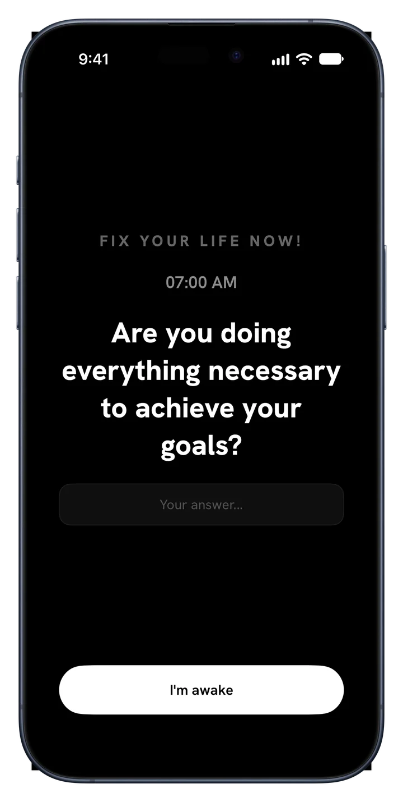
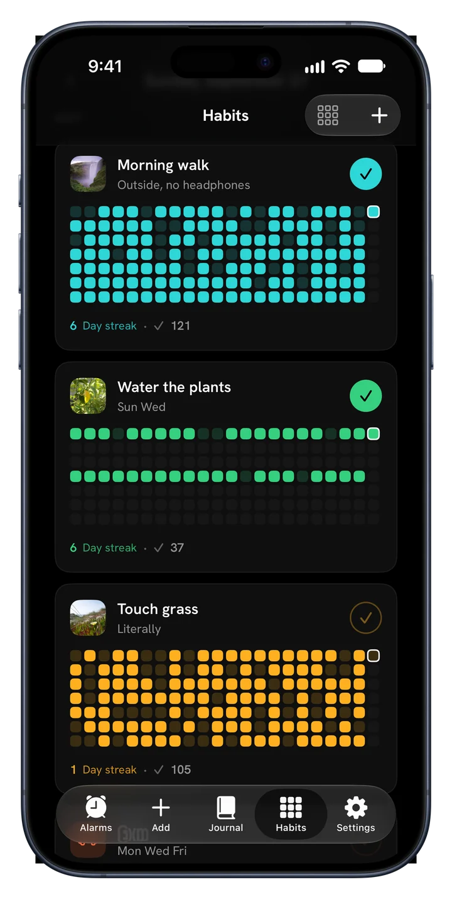
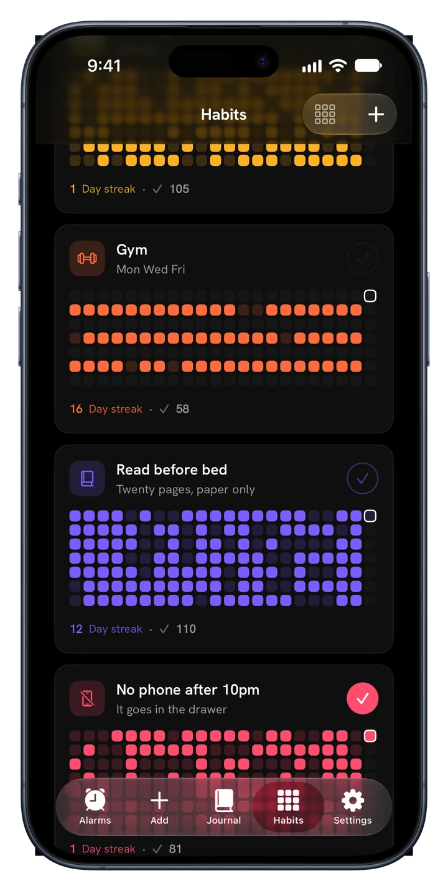
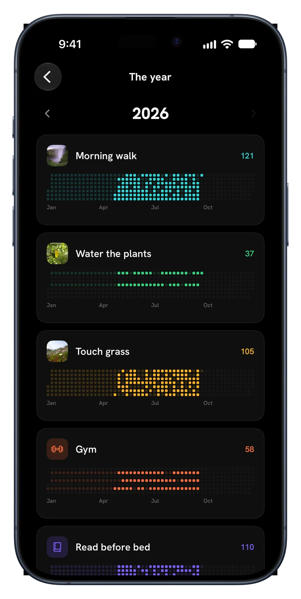
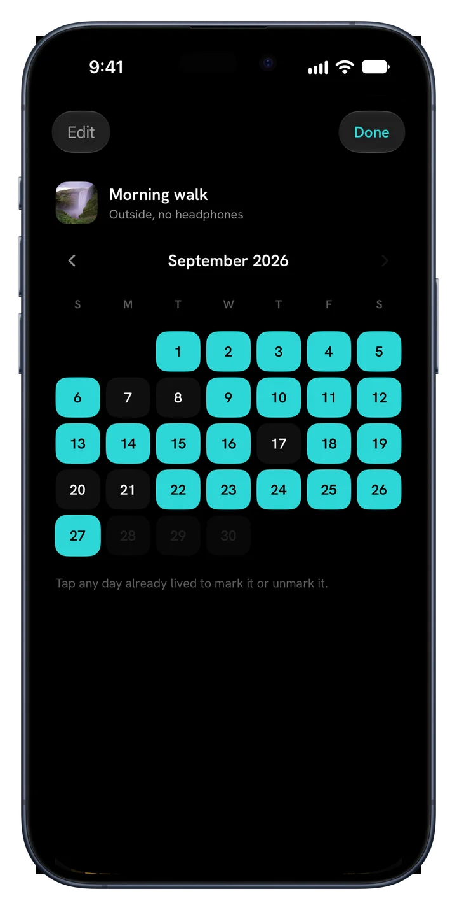
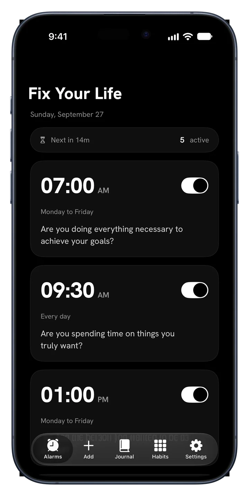
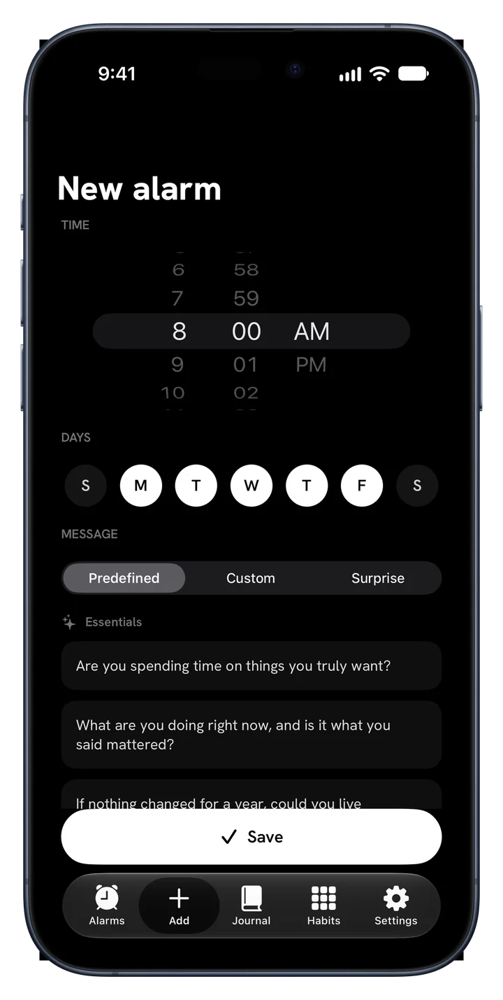
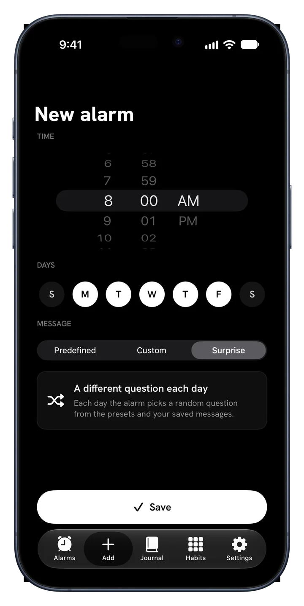
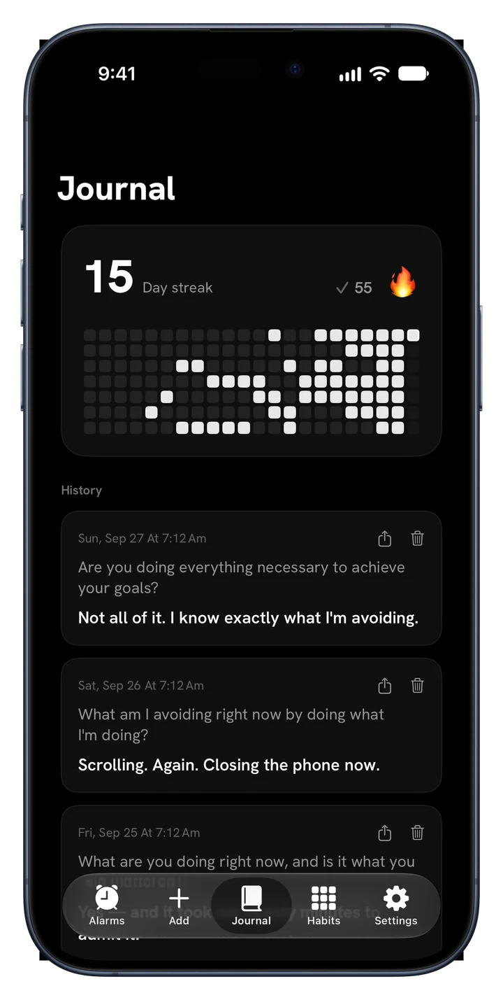
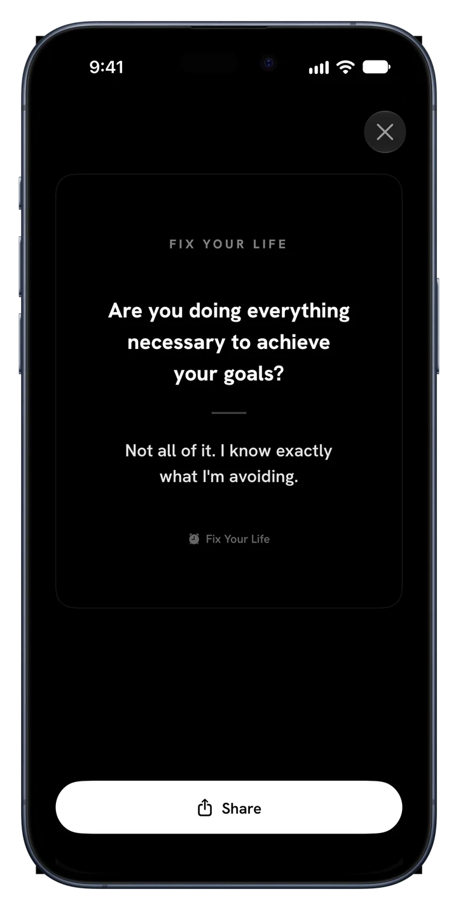

Morning walk
Every dayHalf a year, one square a day
Fix Your Life wakes you up with a question you can't snooze, then helps you keep what you decided to do: habits with your own photos, streaks, and your whole year in color.
Free to download · One alarm and one habit free, forever · No ads. Ever.



New · Habits
Add the things you actually want to keep. Put a face on each one, tick it off, and watch the streak grow in its own color.


Half a year, one square a day
Half a year, one square a day
Half a year, one square a day
Inside the app
Every screen is built for one thing: waking you up to your own life.

Alarms with meaning
Set alarms for any time and any day. Each one carries a question instead of a noise you silence and forget. Answer it in one line, and the day starts honest.
Why ignorable reminders fail →
34 questions · 6 packs
Essentials, Ambition, Time and Mortality, Identity, Honest Mirror and Aliveness. They are not affirmations. They are the questions you have been avoiding. Or write your own.
Daily check-in questions that work →
Surprise mode
Repetition turns into background noise. Surprise mode picks a new question for each weekday, so the alarm never loses its edge.
Daily stoic questions →
A journal that asks first
Every answer is saved with its question and date. The streak, the heatmap and the history are all there, so consistency becomes something you can see.
How to build a journaling streak →
Widgets
Your streak and the question of the day, so the first thing you see is the thing you were avoiding.
Set up the streak widget →
Share the wins
Turn any answer into a clean card and share it anywhere. Your answers are proof you showed up, and some of them deserve daylight.
The one-line-a-day method →How it works
A plan is ready before you finish the first minute.
Mornings, discipline, health, focus, screen time or sleep. Your plan is built around them.
Choose the time. It rings every day with a question that fits what you picked.
Small, daily and yours. Add a photo, pick a color, tick it off.
Every kept day lights a square. Miss one and it shows. Keep going and the year turns to color.
Pricing
One alarm and one habit are free forever, with every feature. Premium is for running a whole day of them.
$0 forever
No card, no trial needed
$17.99 / year
3 days free · about $0.35 a week
$39.99 once
One payment, no subscription
Also available weekly at $4.99. Prices are in US dollars; the App Store shows the price for your country. The free trial is for new subscribers on the yearly plan.
Guides
Short, practical guides on reflection, journaling, streaks and habits, and how to run each one with Fix Your Life.
Research says almost half your day runs on autopilot. Here's a practical system of interruptions that brings you back.
Read the guide ProductivityThe exact questions to ask yourself every day, and when to ask them, so your goals survive contact with your calendar.
Read the guide JournalWhy the smallest journaling method is the one that sticks, and how to make it automatic.
Read the guide StreakStreaks work because losing them hurts. How to start one, protect it, and use the heatmap to stay honest.
Read the guide StoicismThe questions Marcus Aurelius asked himself, turned into a modern alarm-based routine.
Read the guide MotivationYour first thought of the day is up for grabs. Claim it with a question instead of a ringtone.
Read the guideFAQ
“If someone filmed the last two hours of your life, would they conclude you want what you say you want?”
One question in the morning. One square a day. That's how a year changes color.
Download on theApp StoreFree to download · 45 languages · No ads. Ever.